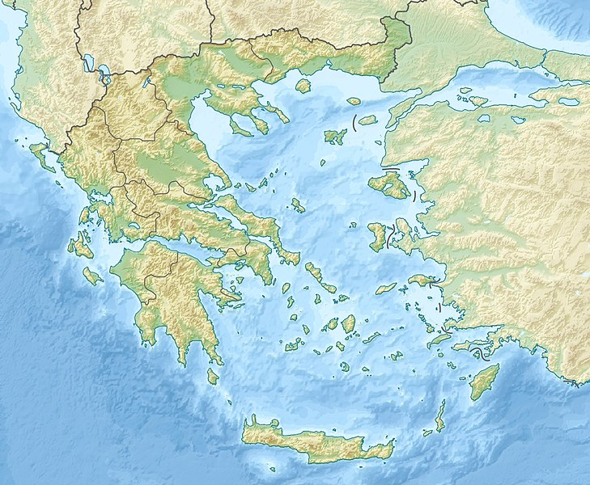

Athens
This article is about the capital city of Greece. For other uses, see Athens (disambiguation). For other uses of Athina, see Athina (disambiguation).
"Agrae" redirects here. For the town of ancient Pisidia, see Agrae (Pisidia).
[atʰɛ̂ːnai̯]) is the capital and largest city of Greece.
Athens dominates the Attica region and is one of the world's oldest cities, with its recorded history spanning over
3,400 years[4]its earliest human presence started
somewhere between the 11th and 7th millennium BC.[5]

Athens map